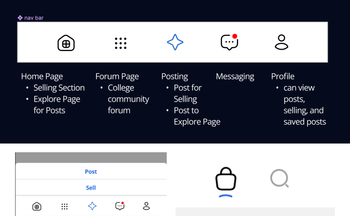
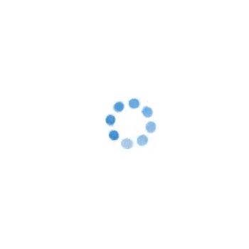
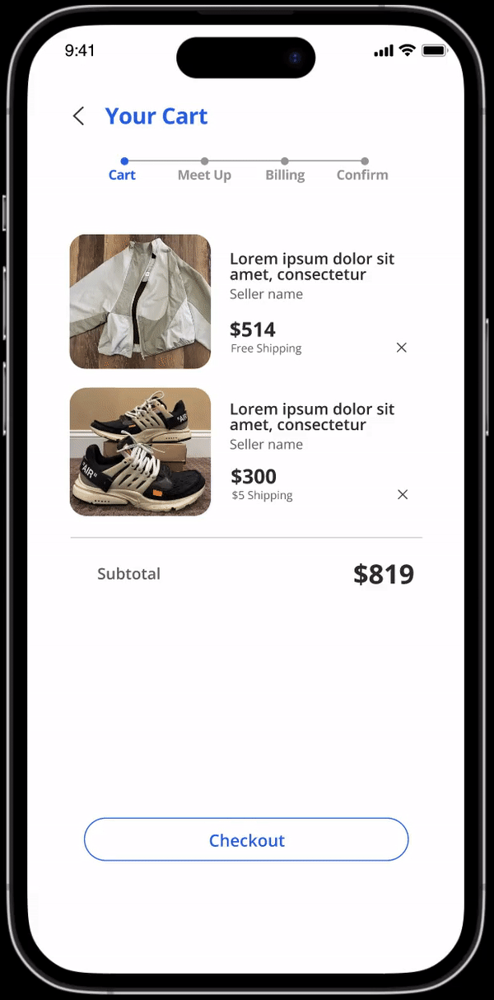
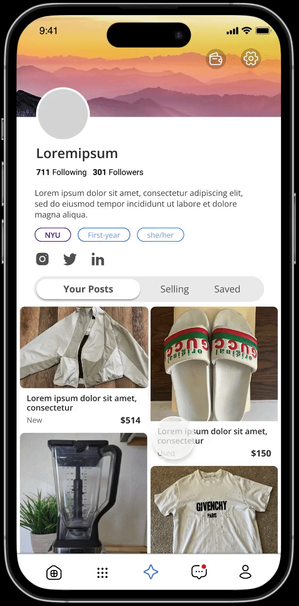

Organize
We determined the page content for each nav bar icon early on. Since I did not want to overcrowd the nav bar, I combined various elements to the same page.

Loading Animation
Our clients wanted a loading animation which incorporated 8 dots to represent a community taking you in. After multiple trials, I created this, with the dots expanding, but also incorporating the loading animation everyone knows and loves:


Planning User Flows
WIP
Visual + Interaction Design
The visual design we went for was clean and simple, keep a light grayscale with a bold blue accent. I added a slight curve to each rectangular element to lessen the sharp lines and keep the app welcoming and friendly,
The main interactive element was the explore page, where our clients wanted the user to be able to scroll around and explore the bubbles in a 360 format. This would be difficult to prototype on Figma, so we tabled that idea and changed it to a horizontal scroll instead.


